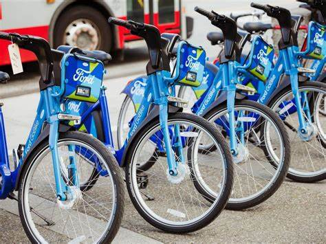
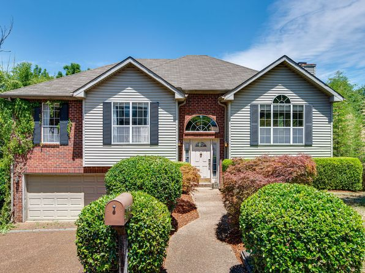
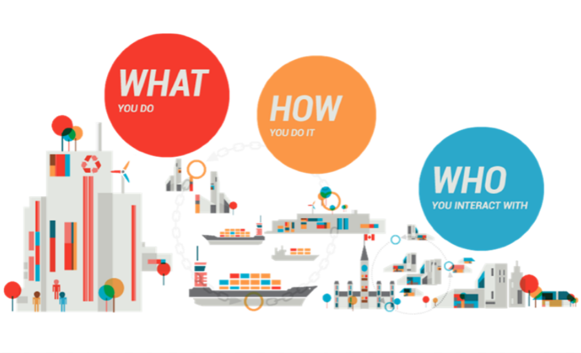

** Featured Post **
This is a countrywide car accident dataset,
which covers 49 states of the USA. Currently,
there are about 2.8 million accident records in
this dataset. Check here
to learn more about this dataset. In this project i used
python to wrangle data and perform exploratory data analysis.

The dataset includes information about individual rides made in a bike-sharing system covering the greater San
Francisco Bay area of the ford gobike for the first quarter of the year 2019. In project in leveraged python libraries
to describes how a period of time(hour, day, month) could affect the duration of trips and demand for bikes, the
distance different users cover from the start station to the end station, the geographical area where this bike system
is more popular...
WeRateDogs is a Twitter account that rates people's dogs with a humorous comment about the dog. I used python
libraries to unveil the most popular dog stage, the most common ratings, the rating with the highest average
favorite count and retweet count, the correlation between favorite count and retweet count, the period of time
with high engagements, and the growth of interactions along the years.

A new coronavirus designated 2019-nCoV was first identified in Wuhan, the capital of China's Hubei province. People developed
pneumonia without a clear cause and for which existing vaccines or treatments were not effective. The virus has shown evidence
of human-to-human transmission. Transmission rate (rate of infection) appeared to escalate in mid-January 2020. As of 30 January
2020, approximately 8,243 cases have been confirmed.

This is home value data for the hot Nashville market. In this project I leveraged SQL functions to clean messy and untidy data,
prepared the data for exploratory analysis in the future.

An e-commerce company wants to segment its customers and determine marketing strategies according to these segments. To this end,
we will define the behavior of customers and create groups according to clusters in these behaviors. In other words, we will include
those who exhibit common behaviors in the same groups and we will try to develop special sales and marketing techniques for these groups.
A person makes a doctor appointment, receives all the instructions and no-show. Patients' failure to attend medical
appointments saps resources and waste every business's most valued asset, "time." Estimates show that patient no-shows
cost the healthcare industry about $150 billion annually. Patients' failure to attend medical appointments saps resources
and waste every business's most valued asset, "time." Estimates show that ...